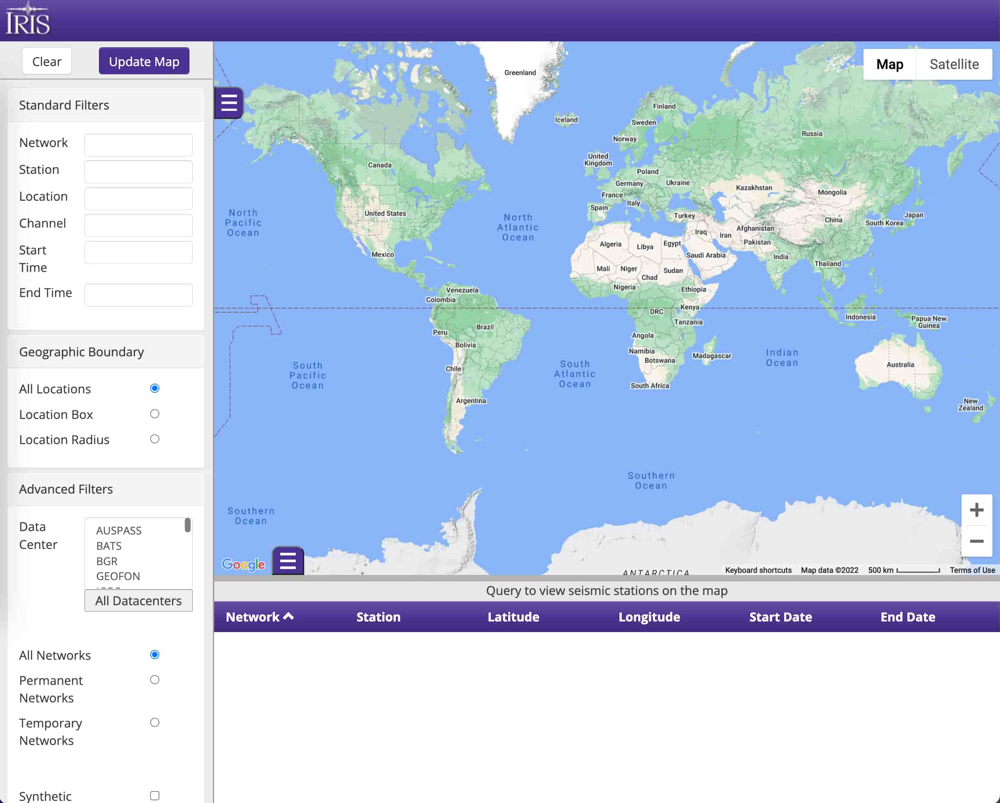
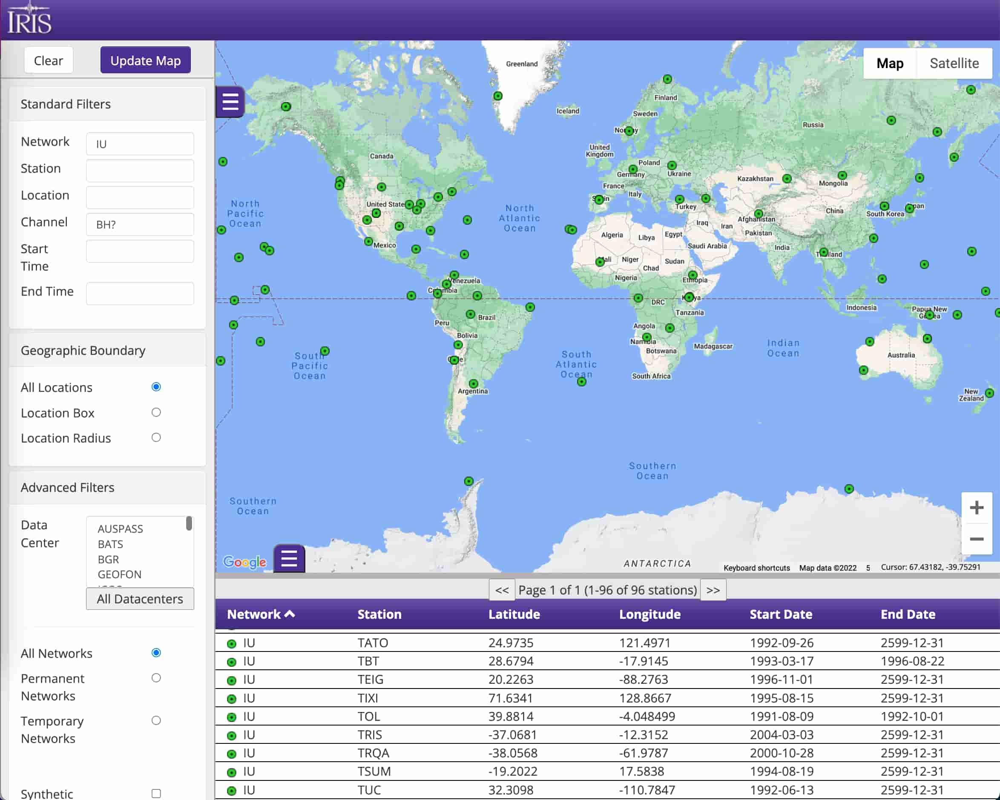
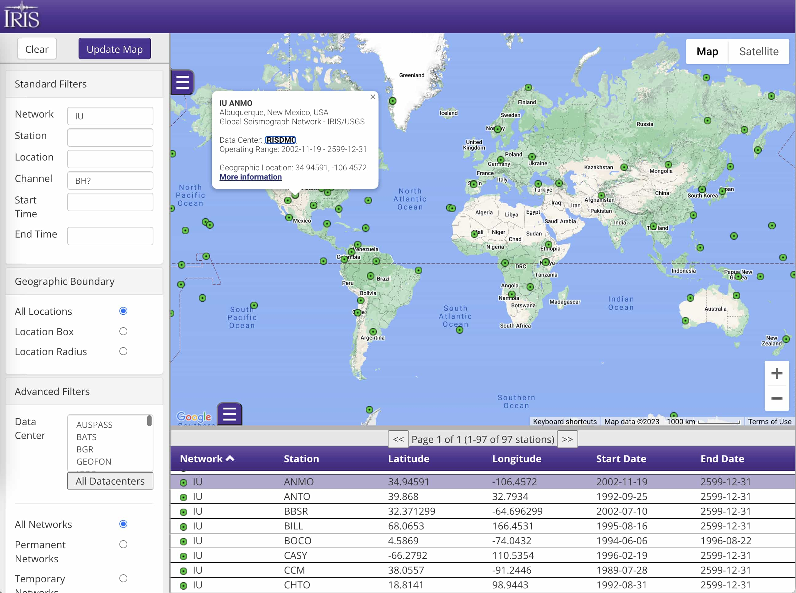
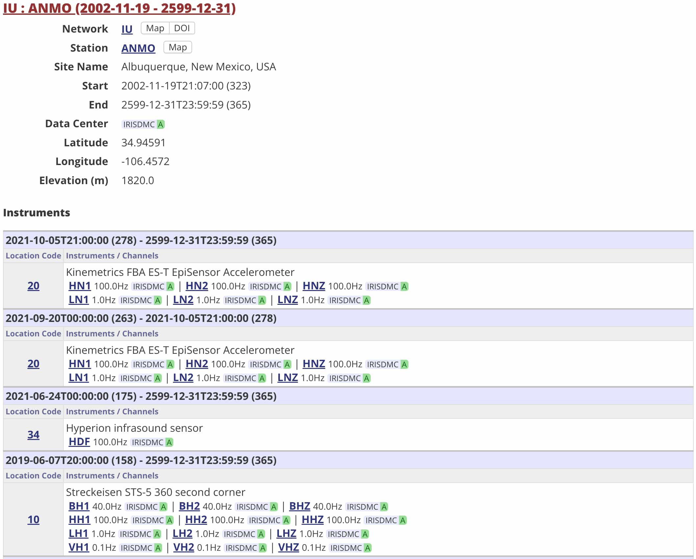
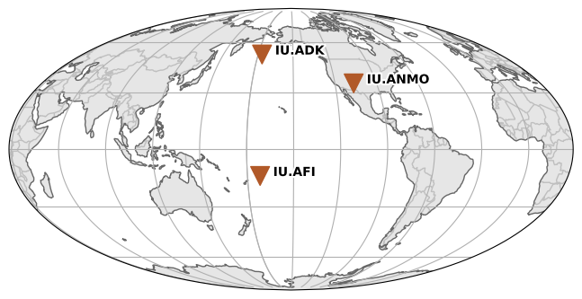
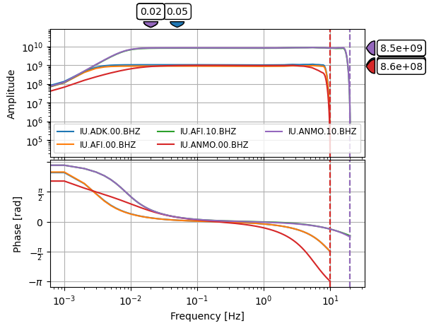

地震台站
Contents
地震台站#
全球地震台站有成千上万个，通常在某个具体研究中只需要符合特定要求的台站，因而需要对地震台站进行筛选。 这一节介绍如何筛选公开地震台站并获取台站信息。
使用 IRIS GMAP 筛选台站#
Note
IRIS GMAP 使用了 Google 地图服务，因而需要科学上网才能正常访问。
IRIS GMAP 是一个由 IRIS 提供的地震台站网页搜索工具，可以方便地查看全球地震台站分布以及台站的 详细信息。下面演示 IRIS GMAP 的基本使用方法。
访问 IRIS GMAP 网站 https://ds.iris.edu/gmap/， 会看到如下界面：界面左侧为功能栏，可以使用不同的准则筛选地震台站； 右侧为显示区，用于显示符合筛选条件的地震台站。
左侧功能栏中，支持以多种不同的方式对地震台站进行筛选：指定台网名、台站名、位置码、通道名；指定时间范围；指定台站位置范围（矩形区域或圆形区域）；指定地震数据中心。
{kind=link}

Fig. 18 IRIS GMAP 界面#
例如，想筛选所有 IU 台网的宽频带地震台站，则可以在 Network 框中输入 IU，
在 Channel 框中输入 BH?（此处的问号为通配符），然后点击上方的 Update Map
按钮，界面右侧便会显示出所有满足筛选条件的台站。右侧上方为地图区域，圆圈标记了
台站的位置；下方为列表区域，会显示台网名、台站名、台站位置以及台站的开始和结束时间。
{kind=link}

Fig. 19 IRIS GMAP 显示 IU 台网的宽频带台站#
可以更进一步查看每个台站的详细信息。以位于美国新墨西哥州的地震台站 IU.ANMO 为例，
点击 IU.ANMO 台站对应的圆圈或下方列表区域的该台，会出现如下图所示的提示框：
{kind=link}

Fig. 20 IRIS GMAP 查看 IU.ANMO 台站的基本信息#
可以看到，IU.ANMO 台站位于美国新墨西哥州 Albuquerque 市，台站开始运行的时间为
2002 年 11 月 19 日，结束运行的时间为 2599 年 12 月 31 日（这一“未来”结束时间
表示台站依然在长期运行中）。
点击提示框中的 “More Information”链接，则会跳转到 IRIS MDA 中 该台站所对应的页面（即 https://ds.iris.edu/mda/IU/ANMO/?starttime=2002-11-19&endtime=2599-12-31)。 该页面不仅列出了台站的基本信息，还列出了台站所使用的地震仪器及其基本参数。
{kind=link}

Fig. 21 IRIS MDA 中查看 IU.ANMO 台站的基本信息#
使用 ObsPy 下载地震台站信息#
IRIS GMAP 作为一个在线工具可以很直观地查看台站分布和基本信息，但却不适合数据 自动化处理。ObsPy 提供了从不同的地震数据中心筛选和下载台站基本信息的功能。
下面演示如何使用 ObsPy 的 Client.get_stations()
函数筛选和下载地震台站信息。
首先，需要导入 ObsPy 中地震数据中心数据下载客户端 Client：
from obspy.clients.fdsn import Client
接下来，我们需要初始化一个 Client 对象。
ObsPy 的 Client 支持多个地震数据中心。这里我们选择使用 IRIS 地震数据中心：
client = Client("IRIS")
Client.get_stations()
函数可以根据指定的参数获取地震台站信息。这里我们想要获得 IU 台网中所有台站名以 A 开头的
宽频带三分量（BH*）台站，并同时获取台站的仪器响应信息（level="response"）：
inv = client.get_stations(
network="IU",
station="A*",
channel="BH*",
starttime="2002-01-01",
endtime="2002-01-02",
level="response"
)
该函数会向 IRIS 地震数据中心发起请求，并返回符合条件的地震台站信息。其返回值是
Inventory 类型，并被保存到变量 inv 中。
下面我们看看变量 inv 中的内容：
print(inv)
Inventory created at 2024-03-24T01:15:01.551200Z
Created by: IRIS WEB SERVICE: fdsnws-station | version: 1.1.52
http://service.iris.edu/fdsnws/station/1/query?starttime=2002-01-...
Sending institution: IRIS-DMC (IRIS-DMC)
Contains:
Networks (1):
IU
Stations (3):
IU.ADK (Adak, Aleutian Islands, Alaska)
IU.AFI (Afiamalu, Samoa)
IU.ANMO (Albuquerque, New Mexico, USA)
Channels (15):
IU.ADK.00.BHZ, IU.ADK.00.BHN, IU.ADK.00.BHE, IU.AFI.00.BHZ,
IU.AFI.00.BHN, IU.AFI.00.BHE, IU.AFI.10.BHZ, IU.AFI.10.BHN,
IU.AFI.10.BHE, IU.ANMO.00.BHZ, IU.ANMO.00.BH1, IU.ANMO.00.BH2,
IU.ANMO.10.BHZ, IU.ANMO.10.BH1, IU.ANMO.10.BH2
可以看到，返回的变量 inv 中包含了满足条件的 1 个台网、3 个台站、15 个通道的信息。
Inventory 类提供的
Inventory.plot() 函数
可以用于快速绘制地震台站分布图：
inv.plot();

Inventory.plot_response()
函数可以用于绘制仪器响应。下面的函数绘制了 inv 中所有 BHZ 分量的仪器响应，并设置了仪器响应图的
最小频率为 0.001 Hz：
inv.plot_response(min_freq=0.001, channel="BHZ");

台站信息的读和写#
通过 Client.get_stations()
获得的台站信息可以保存为多种不同格式。下面的代码将台站信息以 StationXML 格式保存到文件
stations.xml 中：
inv.write("stations.xml", format="STATIONXML")
在需要时，随时可以使用 read_inventory()
函数读入磁盘文件中的台站信息。该函数值返回 Inventory 类型：
from obspy import read_inventory
inv = read_inventory("stations.xml")
深入理解和使用 Inventory 类#
上面提到，Client.get_stations()
和 read_inventory() 的返回值都是
Inventory 类型。
事实上，Inventory 类是 ObsPy 中最核心的类之一，用于储存地震台站信息。
下图展示了 Inventory 类的属性及其层级关系：
Inventory 类可以看做是
Network 类的列表;
Network 类可以看做是
Station 类的列表;
Station 类可以看做是
Channel 类的列表。

Inventory 类#
可以对 Inventory 进行列表相关的操作，
下面对 inv 进行循环并打印每个元素（即 Network 类）的值：
for net in inv:
print(net)
Network IU (Global Seismograph Network - IRIS/USGS (GSN))
Station Count: 3/128 (Selected/Total)
1988-01-01T00:00:00.000000Z - --
Access: open
Contains:
Stations (3):
IU.ADK (Adak, Aleutian Islands, Alaska)
IU.AFI (Afiamalu, Samoa)
IU.ANMO (Albuquerque, New Mexico, USA)
Channels (15):
IU.ADK.00.BHZ, IU.ADK.00.BHN, IU.ADK.00.BHE, IU.AFI.00.BHZ,
IU.AFI.00.BHN, IU.AFI.00.BHE, IU.AFI.10.BHZ, IU.AFI.10.BHN,
IU.AFI.10.BHE, IU.ANMO.00.BHZ, IU.ANMO.00.BH1, IU.ANMO.00.BH2,
IU.ANMO.10.BHZ, IU.ANMO.10.BH1, IU.ANMO.10.BH2
Network 类#
Network 类提供了很多台网相关的属性和函数。
例如，下面的代码会输出第一个台网的代码、总台站数以及 inv 中实际包含的台站数目：
net = inv[0]
print(net.code, net.total_number_of_stations, net.selected_number_of_stations)
IU 128 3
可以对 Network 进行列表相关的操作，
这里我们取其第一个台站并查看其信息：
sta = net[0]
print(sta)
Station ADK (Adak, Aleutian Islands, Alaska)
Station Code: ADK
Channel Count: 3/103 (Selected/Total)
1993-09-21T00:00:00.000000Z - 2009-02-14T00:00:00.000000Z
Access: open
Latitude: 51.8823, Longitude: -176.6842, Elevation: 130.0 m
Available Channels:
.00.BH[ZNE] 20.0 Hz 1999-02-11 to 2003-05-23
Station 类#
Station 类也提供了很多台站相关的属性和函数。
例如，下面的代码输出了当前台站的台站代码、经纬度、高程、台站的总通道数目和当前 inv 中包含的
通道数目：
print(sta.code, sta.latitude, sta.longitude, sta.elevation)
print(sta.total_number_of_channels, sta.selected_number_of_channels)
ADK 51.8823 -176.6842 130.0
103 3
可以对 Station 进行列表相关的操作，
这里我们取该台站的第一个通道并查看其信息：
chn = sta[0]
print(chn)
Channel 'BHE', Location '00'
Time range: 1999-02-11T00:00:00.000000Z - 2003-05-23T08:40:00.000000Z
Latitude: 51.8823, Longitude: -176.6842, Elevation: 130.0 m, Local Depth: 0.0 m
Azimuth: 90.00 degrees from north, clockwise
Dip: 0.00 degrees down from horizontal
Channel types: CONTINUOUS, GEOPHYSICAL
Sampling Rate: 20.00 Hz
Sensor (Description): None (Streckeisen STS-1H/VBB Seismometer)
Response information available
Channel 类#
Channel 类也提供了很多通道相关的属性和函数。
例如，下面的代码输出了当前通道的方位角、倾角、位置码和采样率等信息：
print(chn.azimuth, chn.dip, chn.location_code, chn.sample_rate)
90.0 0.0 00 20.0